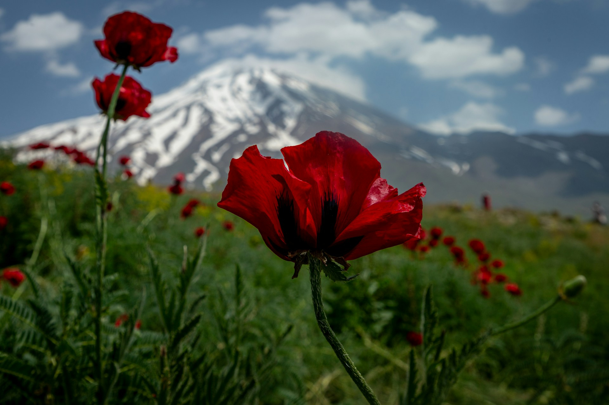
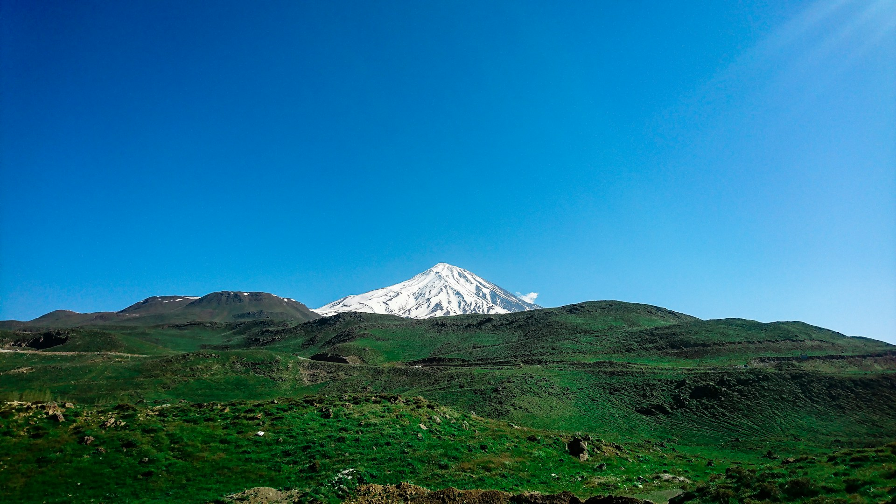

.jpg)

Mount Damavand is the highest peak in Iran and the Middle East, standing at 5,671 meters (18,606 feet) above sea level. It is part of the Alborz mountain range, located near the southern coast of the Caspian Sea. Damavand is a dormant stratovolcano and holds great significance in Persian mythology and culture, often symbolizing resistance and endurance. The mountain is known for its stunning natural beauty, with snow-capped peaks, alpine meadows, and hot springs. It's also a popular destination for hikers and climbers, offering various routes to the summit, with varying degrees of difficulty. The peak of Damavand is often shrouded in clouds, and on clear days, it offers breathtaking panoramic views of the surrounding landscape..
Mount Damavand, a colossal masterpiece sculpted by time, is a siren song to adventurers and nature lovers alike. This dormant volcanic giant, the crown jewel of Iran, offers an unparalleled experience for those seeking an escape from the ordinary. With its snow-capped peak touching the heavens and its slopes adorned with a breathtaking tapestry of flora and fauna, Damavand is more than just a mountain; it's a realm of wonder. Prepare to be captivated by its allure as you embark on a journey to conquer this majestic peak.
Enjoy panoramic views from Polur Village, relax in Abgarm-e Larijan's hot springs, and explore Lar National Park. Stay in cozy lodges with prices from $40 to $120 per night.
Book NowScale Mount Damavand with an experienced guide, camp at picturesque sites near Polur or Nandal, and immerse yourself in the adventure. Trek packages start at $150 per person.
Book NowExperience luxury treks, helicopter tours, and stays in Rineh’s finest hotels. Indulge in private hot springs, gourmet dining, and more, with packages starting at $1,000 per person.
Book Now